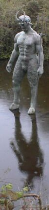

Trenton, Michigan,
U.S.A.
Lé 5 dé mai, 1973.
Moussieu l'Rédacteu,
Jé n'vouos ai pon env'yé d'lettres pour tchiques sémaines, né sachant pon si la "grève" dé vouos travailleurs continnuit à vouos empêchi d'înmprînmer la gâzette, la dreine èrchue étant la cheinne du preunmyi d'mar - tchi veurt dithe qué j'avons 'té deux mais sans nouvelles dé Jèrri.
Tout est boulevèrsé dans l'monde ches jours. À Washington, les Démocrates font d'lus mus pour troublier l'Président Nixon (Consèrvateur du parti Républicain) viyant qu'des membres dé san parti êprouvîdrent à mett' des êcouteurs dans lus appartènements d'assembliées d'êlection. J'mé r'souveins qué quand j'tais mousse les Louothièrs à St. Ouën avaient lus "écouteux" - ch'tait un homme dans chu temps-là - muchi dans les vèrt-bouais à côté d'l'entrée d'la maîson du candidat Rôsyi pour ouï combein d'vieaux qu'san parti avait payi pour voter pour li. Ch'est seux qu'les Rôsièrs faîsaient la mème chose étout siez les Louothièrs, mais ch'tait au pus fort la pouque lé jour dé l'êlection et tout l'espionnage 'tait oublyiyé ou accepté d'bouanne art des deux côtés. À la pliaiche d'en faithe autant, nouot' Congrès à Washington, tch'a eune bouanne mâjorité d'Démocrates comme membres, n'a fait rein ch't année qué d'nommer des conmités d'entchête pour êprouver à punni les farceurs et discréditer l'Président tchi n'a pon l'temps d's'otchuper d'ité viyant tch'il a du travas d'împortance mondiale par sus l's ièrs à la Blianche Maîson.
J'sommes supposés aver la paix au Viet-Nam, mais la dgèrre entre lé Nord et l'Sud d'ches pays-là continnue. Ou n'a janmais vraînment tchitté dans l'pays du Cambodge. L's ambassadeurs et r'présentants d'l'Améthique sont en dangi dans les pays Arabes et cèrtains pays d'l'Améthique du Sud, et y'en a mème ieu d'assasinnés. L's Arabes et les Israëlistes sont à gorge coper et l's Arabes bliaûment l'Améthique viyant qu'ou vend d's armes à Israël, mais i' n'trouvent pon à r'dithe quand la Russie lus en donnent à ieu-mèmes.

Comme jé l'dîsais, tout est à la boulevèrse d'nouos jours. Quand j'en pâlais à un anmîn en Floride y'a eune tchînzaine, i' m'dît: "Ch'est l'travas du Satan! Il est par les c'mîns, et les gens ont tellement abandonné la réligion tch'i' n'y craient pon, au Satan, et il en prend l'avantage pour faithe san travas înfèrnal!" Eh bein, ch'n'est pon d'aniet qu'les gens oublient l'Bouan Dgieu. Lé preunmié vèrset du quatorzième Psaume (ou pouvez l'vaie à la page 208 dé La Litourgie) nouos dit: "L'insensé a dit en son coeur: Il n'y a point de Dieu!"
V'la tchi m'fait penser à man janne temps ès Landes à St. Ouën. Il 'tait bein réel pour nous, mousses, dans chu temps-là, l'Satan, et à m'n idée ch'né s'sait pon eune mauvaise idée dé l'craindre, lé vilain moussieu, mème au jour d'aniet. À l'Êcole du Dînmanche à St. George nou-s-en ouiyait souvent pâler, car i' fallait apprendre les Collectes, Êpitres et Êvangiles dans La Litourgie par tchoeu, et êtudier les Saintes Êcrituthes. Dans La Litanie, nou r'citait: "Bon Dieu délivre-nous des ruses et des assauts du Diable" et nou Lî d'mandait "d'abattre Satan sous nos pieds". Dans la collecte pour lé siexième Dînmanche auprès l'Êpiphanie, nou r'citait: "O Dieu, dont le Fils béni à jamais a été manifesté pour détruire les oeuvres du Diable, nous Te supplions," etc. Dans l'sèrvice du bâptème des êfants, lé Minnistre démandait ès parrains et marraines: "Renonces-tu, au nom de cet enfant, au Diable et à toutes ses oeuvres?" Pus liain dans l'mème sèrvice, lé Minnistre prie l'Bouan Dgieu qué "Cet enfant combattra vaillamment contre le péché, le monde et le Diable".
Dans san fanmeux dictionnaithe Jèrriais-Français, l'Académicien L'Maistre nouos donne touos ses noms: Lé Satan, l'Dgiâbl'ye, Lé Démon, L'Îndîngne, Lé Nic, Lé Forteune, Lé Pid Froutchi, Lé Malîn et L'Malîn Esprit. Il est bein nommé: il est si malîn tch'il est tréjous par les c'mîns et qu'nou n's'en appèrche pon! Il est mème malîn assez pour faithe un tas d'grosses têtes dé l'Églyise Anglyicane craithe tch'i' n'existe pon, car j'ai 'té êtonné d'liéthe, dans l'articl'ye du révérend Peter Manton dans l' "Pilote" dé févri, 1973, qué l'Dgiâbl'ye a mênagi à s'faithe haler dé d'dans l'sèrvice du bâptème, "Series II" - eune chose qué j'n'avais pon ouï ichîn en Améthique où'est qu'les sèrvices dé l'Églyise Épiscopale (branque dé l'Églyise Anglyicane) n'ont pon 'couo 'té gobillonnés comme i' sont à l'faithe en Angliétèrre.
Quand j'y pense, ch'est p't êt' lé Satan mème tch'est driéthe l'idée d'freunmer l'Églyise dé St. Simon, car ch'est seux tch'i' n'aime pon l'odeu d'enchens. Il est bein pus accouôteunmé à l'odeu du brulîn et d'la foudre!
Il est grand temps d'nouos r'mett' touos à prier l'Bouan Dgieu et d'Lî d'mander, comme nou l'faîsait quand nou-s-allait à l'Êcole du Dînmanche comme mousses, dé nouos délivrer des rûses et des assauts du Dgiâbl'ye et d'toutes ses oeuvres et d'êt' nouot' appias parmi tout l'dangi et la mauvaîtchi tchi s'pâsse dans l'monde.
George d'La Forge
Viyiz étout: